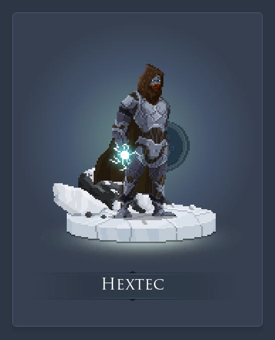
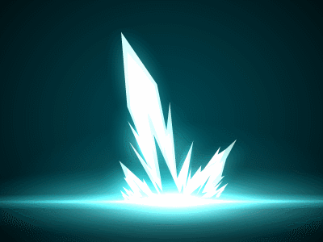

Escolha seu Personagen:
Habilidades
Passiva:Ao atacar seu inimigo 3 vezes seguidas o atordoa por 0,75 segundos.

habilidade Q:Joga uma lança de gelo causando dano mágico
Habilidade W:Cria uma armadura de gelo por 5 segundos reduzindo o dano tomado em 40%

Habilidade E:Cria um campo de gelo que causa dano magico por segundo

Habilidade R:Cria um caminho de gelo que causa dano baseado em vida maxima em atordoa os inimigos

Fontes
deviantart.com/ realtimevfx.com/ wattpad.com